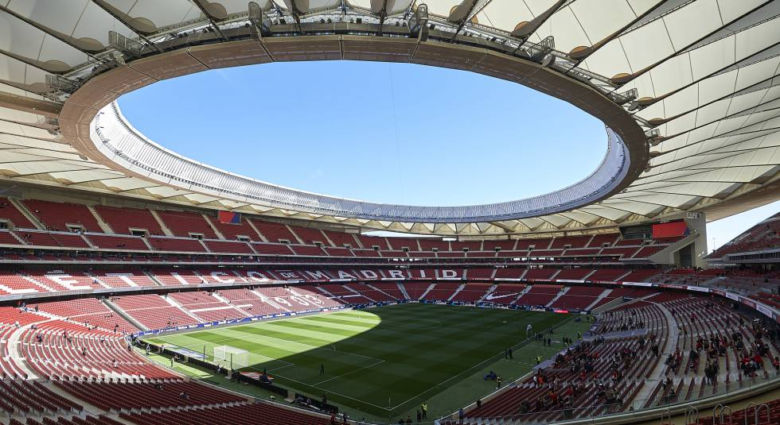

Sin planes para esta semana?
Esta semana vuelve la mejor competicion del mundo la UEFA Champions league, donde se disputara los cuartos de final, donde la final de esta competicion se disputara en el Wanda Metropolitano, con capacidad para 68.000 espectadores y que alberga los partidos del Club Atlético de Madrid. Es el cuarto estadio español en albergar una final de la máxima competición continental y el segundo en la ciudad de Madrid, tras el Estadio Santiago Bernabéu (1957, 1969, 1980 y 2010), Estadio Ramón Sánchez Pizjuán (1986) y Camp Nou (1989 y 1999). La capital de Españase convertirá así en la segunda ciudad en celebrar cinco o más finales de la competición tras Londres y la quinta en celebrar este evento en estadios distintos junto a Ámsterdam, París, Múnich y Lisboa.